#> Principais pacotes
library(dplyr)
library(sf)
library(ggplot2)
library(osmdata)
library(elevatr)
library(raster)
library(geobr)
#> Pacotes auxiliares
library(purrr)
library(furrr)
library(rvest)
library(xml2)
library(BAMMtools)
library(stringr)
library(janitor)
library(ggthemes)
library(viridis)
library(showtext)O objetivo
O objetivo deste post é conseguir gerar o gráfico abaixo com uma única linha de código. Isto será possível, pois todo o processamento dos dados será feito por funções auxiliares. A inspiração do mapa vem diretamente de BlakeRMills, criador do pacote {MetBrewer}.
Abaixo segue a lista de todos os pacotes utilizados neste post. Não é necessário chamar todos eles com library mas é preciso ter todos eles instalados1. Com exceção dos três primeiros, usaremos somente uma ou duas funções de cada um dos pacotes.
Recife
Para ganhar intuição sobre o processo vamos montar um único caso. Escolho a cidade de Recife, pois ela é uma cidade relativamente pequena em termos de área física.
Baixando os dados
O objetivo é gerar o mapa de altitude das maiores cidades do Brasil. Ao invés de ranquear as cidades por área, eu prefiro ordená-las por tamanho de população. Uma maneira fácil de conseguir esta informação é buscando ela diretamente na Wikipedia. No link temos uma tabela com código do IBGE, nome do município, nome do estado e população total em 2022.
É bastante simples importar esta tabela no R. O código abaixo, interpreta a página com base na url, encontra todas as tabelas2 e escolhe especificamente a tabela principal.
url = "https://pt.wikipedia.org/wiki/Lista_de_municípios_do_Brasil_por_população"
tab = xml2::read_html(url) |>
rvest::html_table() |>
purrr::pluck(2)
head(tab)# A tibble: 6 × 5
Posição `Código IBGE` Município `Unidade federativa` População
<chr> <chr> <chr> <chr> <chr>
1 1º 3550308 São Paulo São Paulo 11 451 245
2 2º 3304557 Rio de Janeiro Rio de Janeiro 6 211 423
3 3º 5300108 Brasília Distrito Federal 2 817 068
4 4º 2304400 Fortaleza Ceará 2 428 678
5 5º 2927408 Salvador Bahia 2 418 005
6 6º 3106200 Belo Horizonte Minas Gerais 2 315 560 Este dado está um pouco sujo então eu limpo a tabela para facilitar nosso trabalho. Após limpar os dados, eu seleciono as 200 cidades mais populosas.
Code
as_numeric_char = Vectorize(function(x) {
ls = stringr::str_extract_all(x, "[[:digit:]]")
y = paste(ls[[1]], collapse = "")
as.numeric(y)
})
clean_tab = tab |>
janitor::clean_names() |>
rename(
code_muni = codigo_ibge,
name_muni = municipio,
rank = posicao,
name_state = unidade_federativa,
pop = populacao
) |>
filter(name_muni != "Brasil") |>
mutate(
code_muni = as.numeric(code_muni),
pop = as_numeric_char(pop),
rank = rank(-pop),
name_muni = stringr::str_to_title(name_muni)
)
top200 = slice_max(clean_tab, pop, n = 200)Shape da cidade
Agora que temos uma lista de cidades podemos importar o shapefile com os limites territoriais do município do Recife. Graças ao pacote {geobr} isto é muito simples. A função read_municipality faz justamente isto e precisa apenas do código de 7 dígitos do IBGE.
code_muni = top200 |>
filter(name_muni == "Recife") |>
pull(code_muni)
border = geobr::read_municipality(code_muni)
Downloading: 1.8 kB
Downloading: 1.8 kB
Downloading: 2.7 kB
Downloading: 2.7 kB
Downloading: 35 kB
Downloading: 35 kB
Downloading: 67 kB
Downloading: 67 kB
Downloading: 110 kB
Downloading: 110 kB
Downloading: 140 kB
Downloading: 140 kB
Downloading: 140 kB
Downloading: 140 kB
Downloading: 170 kB
Downloading: 170 kB
Downloading: 210 kB
Downloading: 210 kB
Downloading: 260 kB
Downloading: 260 kB
Downloading: 260 kB
Downloading: 260 kB ggplot(border) +
geom_sf() +
ggtitle("Limites do município")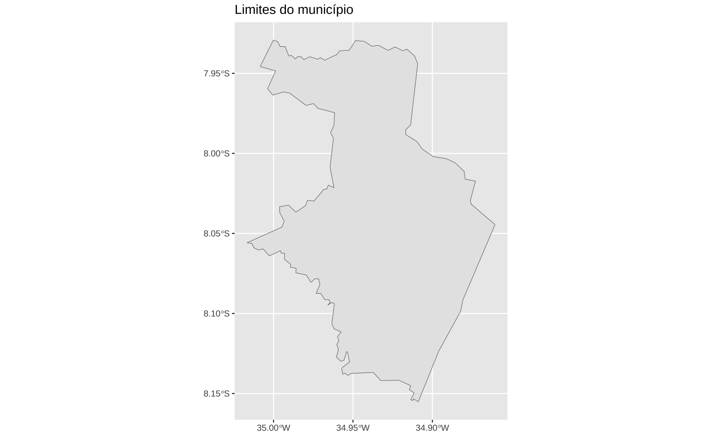
Principais vias
O segundo passo é importar o shape das principais vias da cidade. Aqui, uso o {osmdata}. O código abaixo importa as vias como “linhas” e depois usa os limites do município para remover os segmentos de linhas que estão fora da cidade.
#> Define os "limites" da busca. Monta um bounding box em torno do Recife
rec = opq(bbox = getbb("Recife, Pernambuco, Brazil"))
#> Pega as principais vias
streets = add_osm_feature(
rec,
key = "highway",
value = c("primary", "secondary", "tertiary", "residential")
)
#> Converte o objeto para sf (LINESTRING)
streets = osmdata_sf(streets)
streets = streets$osm_lines
streets = select(streets, osm_id, name)
streets = st_transform(streets, crs = 4674)
#> Encontra a intersecção entre as vias e os limites do município
streets_border = st_intersection(streets, border)Para tornar mais evidente o que está acontecendo mostro primeiro o resultado geral, com todas as vias.
ggplot(streets) +
geom_sf(linewidth = 0.15) +
theme_void()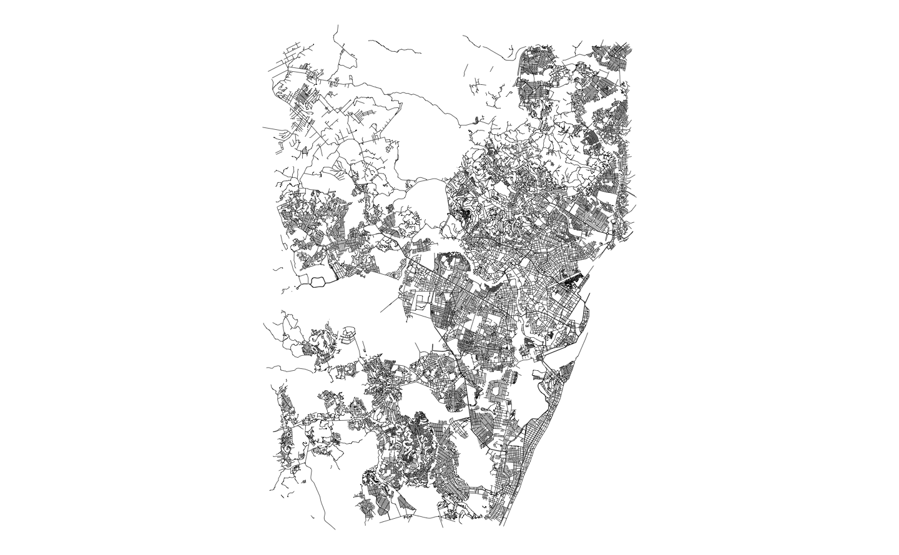
E agora o resultado após a intersecção entre as vias e os limites do município.
ggplot() +
geom_sf(data = border, fill = NA) +
geom_sf(data = streets_border, linewidth = 0.15, color = "gray20") +
theme_void()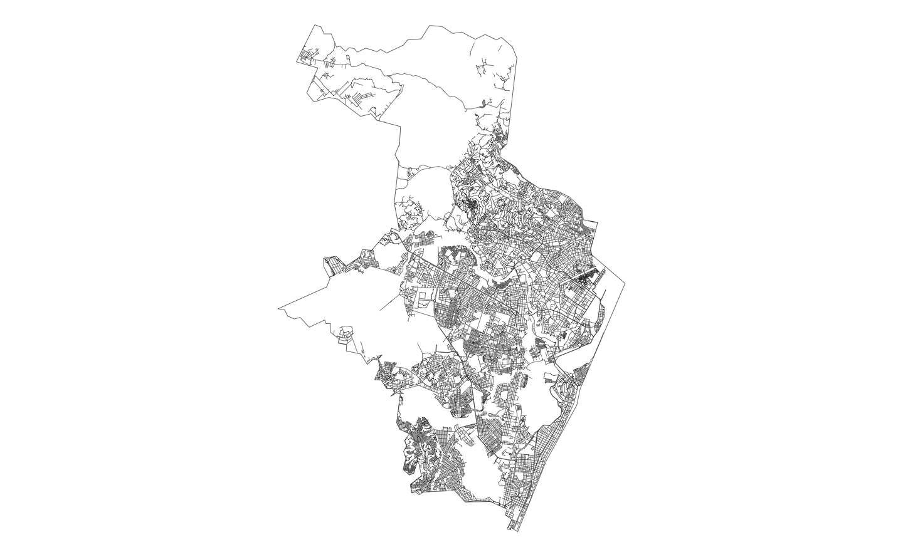
Altitude
O terceiro passo é importar os dados de altitude da cidade. Isto é feito com o pacote {elevatr}. Como os dados de altitude são armazenados como raster preciso convertê-los para dados em formato de vetor3. Novamente eu faço a intersecção destes dados com os limites do município para ficar somente com os valores que nos interessam.
O gráfico abaixo mostra o resultado final.
#> Importa os dados de altitude
altitude = elevatr::get_elev_raster(border, z = 9, clip = "bbox")
#> Converte para 'vector'
rec_alti = raster::rasterToPolygons(altitude)
rec_alti = sf::st_as_sf(rec_alti)
names(rec_alti)[1] = "elevation"
#> Converte o CRS e intersecta com os limites do município
rec_alti = rec_alti %>%
st_transform(crs = 4674) %>%
st_intersection(border) %>%
#> Remove geometrias inválidas
filter(st_is_valid(.))#> Mapa
ggplot(rec_alti) +
geom_sf(aes(fill = elevation)) +
scale_fill_viridis_c(name = "Altitude", option = "inferno") +
theme_void()
Classificando a altitude
Para facilitar a visualização dos dados, classifica-se eles em grupos. Eu uso o algoritmo de Jenks para classificar os dados de elevação em 7 grupos distintos. O algoritmo de Jenks, também conhecido como “quebras naturais”, é bastante utilizado com dados espaciais.
ggplot(rec_alti, aes(x = elevation)) +
geom_histogram(bins = 40, color = "white") +
geom_hline(yintercept = 0) +
scale_x_continuous(limits = c(-1, NA)) +
ggtitle("Distribuição da altitude em Recife") +
theme_light()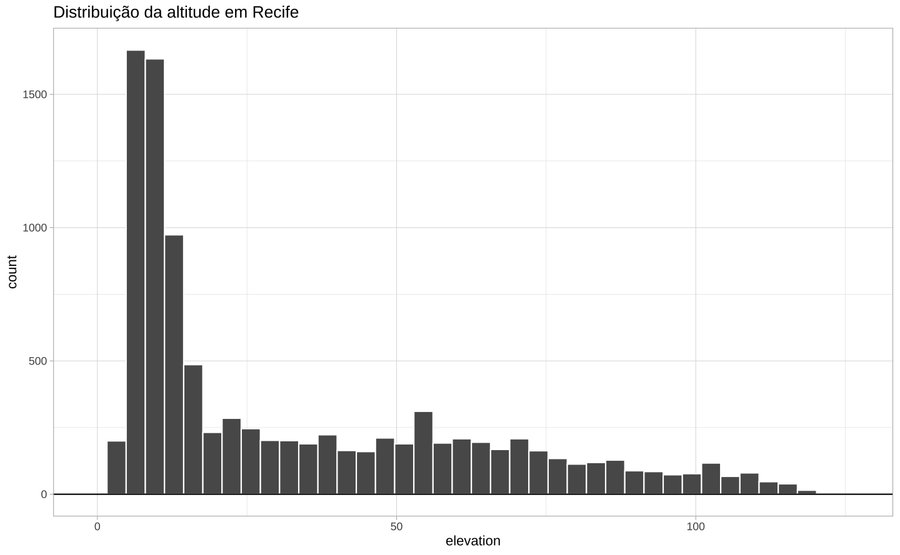
Como todo algoritmo de clustering, o algoritmo de Jenks busca minimizar a distância intraclasse enquanto tenta maximizar a distância entre as classes; isto é ele busca observações parecidas e juntas elas em um grupo e busca separar os grupos o máximo possível.
A medida de distância/dissemelhança que o algoritmo usa é a soma do quadrado dos desvios (em relação à média do grupo). O algortimo busca minimizar esta “variância” em cada um dos grupos para encontrar os grupos mais “parecidos” possíveis. O número de grupos é arbitrário e precisa ser selecionado manualmente4. Eu costumo escolher algum número entre 3 e 9.
jbreaks = BAMMtools::getJenksBreaks(rec_alti$elevation, k = 7)
jbreaks = round(jbreaks, -1)
rec_alti = rec_alti %>%
mutate(
jenks_group = cut(elevation, jbreaks)
)
ggplot(rec_alti, aes(x = elevation)) +
geom_histogram(bins = 40, color = "white") +
geom_hline(yintercept = 0) +
geom_vline(xintercept = jbreaks) +
scale_x_continuous(limits = c(-1, NA)) +
labs(
title = "Distribuição da altitude em Recife",
subtitle = "Linhas verticais mostram o agrupamento do algoritmo de Jenks"
) +
theme_light()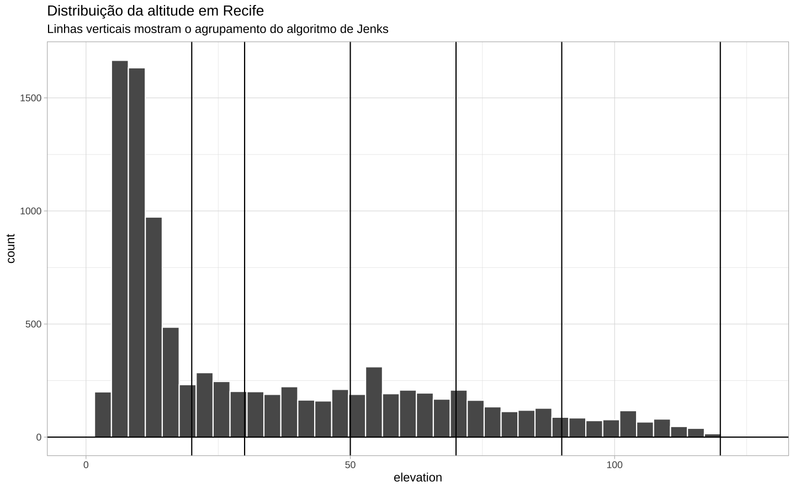
O mapa abaixo mostra o formato dos dados. Temos um grid retangular que mostram a altura, em metros, da cidade do Recife.
#> Mapa
ggplot(rec_alti) +
geom_sf(aes(fill = jenks_group)) +
scale_fill_viridis_d(option = "inferno") +
theme_void()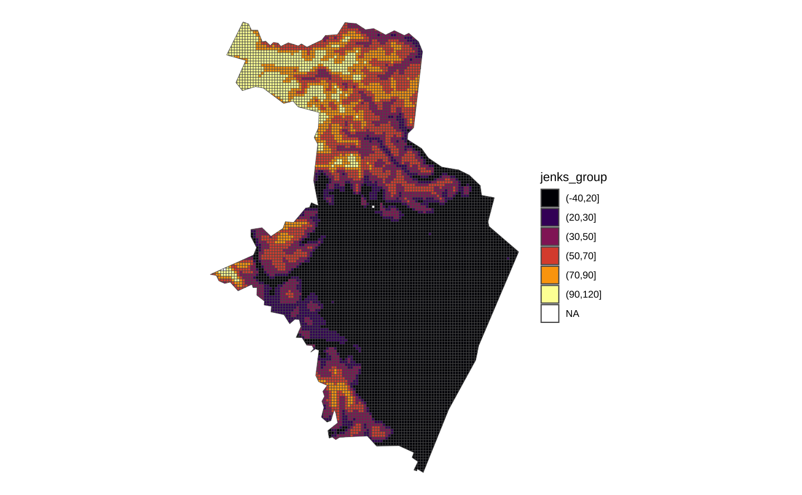
Juntando as partes
A próxima etapa é um pouco mais complexa então vamos proceder em passos curtos. Os dados de altitude estão agrupados em grupos, definidos pelo algoritmo de jenks. Nosso objetivo é encontrar todas as ruas que pertencem a cada um destes grupos de altitude.
levels(rec_alti$jenks_group)
#> [1] "(-40,20]" "(20,30]" "(30,50]" "(50,70]" "(70,90]" "(90,120]"
jgroups = levels(rec_alti$jenks_group)O mapa abaixo mostra todos as áreas com altitude dentro do grupo 6 (90, 120].
jgroups = levels(rec_alti$jenks_group)
sub = rec_alti %>%
filter(jenks_group == jgroups[6]) %>%
st_union(.) %>%
st_as_sf()
ggplot(sub) + geom_sf()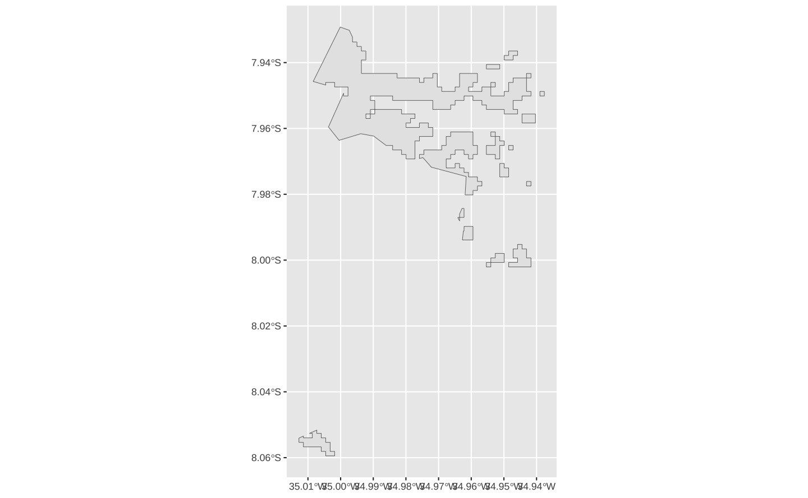
Fazendo a intereseção entre este subconjunto do grid de altitude com o shape das ruas, encontra-se somente as vias que estão neste grupo de altitude.
substreet = streets %>%
st_intersection(sub) %>%
filter(st_is_valid(.))
ggplot() +
geom_sf(data = substreet, linewidth = 0.5) +
geom_sf(data = sub, fill = NA)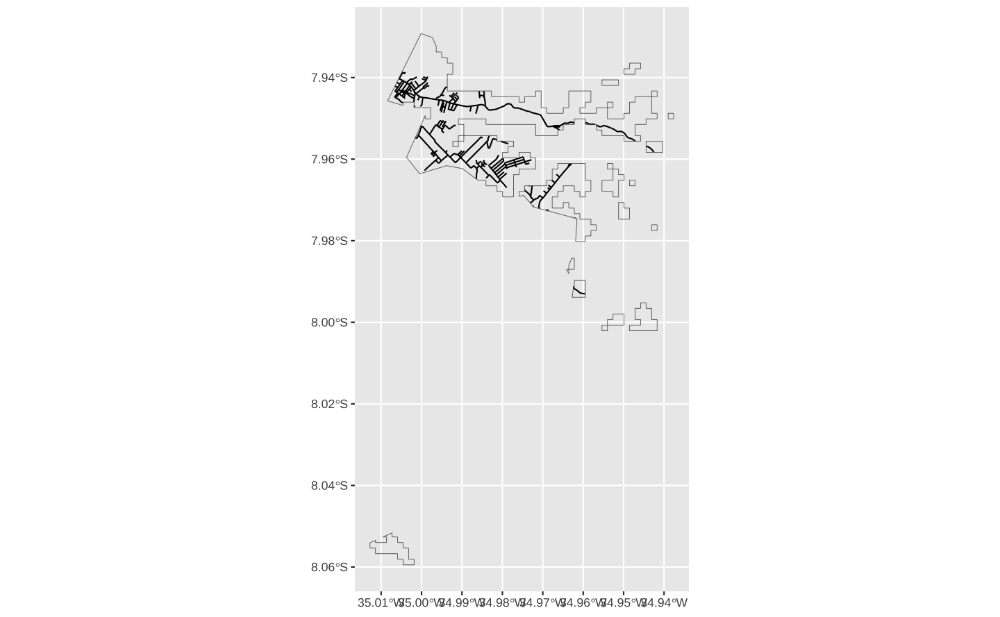
Juntando as duas etapas num mesmo bloco de código temos as linhas abaixo. Primeiro, encontra-se o subconjunto do grid de altitude dentro de um grupo. Depois, faz-se a interseção deste grupo com as vias da cidade.
poly = rec_alti %>%
filter(jenks_group == jgroups[6]) %>%
st_union(.) %>%
st_as_sf()
joined = streets %>%
st_intersection(poly) %>%
filter(st_is_valid(.))
ggplot(joined) + geom_sf()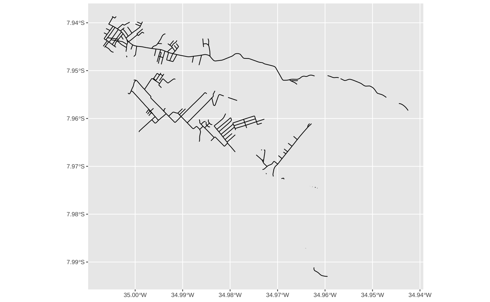
Para repetir o código acima em todos os grupos, faz-se um loop simples. Os resultados são gravados numa lista chamada streets_altitude.
#> Cria uma lista para gravar os resultados
streets_altitude <- list()
#> For-loop em todos os elementos de jgroups
for (i in seq_along(jgroups)) {
#> Seleciona um nível do grupo em particular
group = levels(rec_alti$jenks_group)[[i]]
#> Encontra o subconjunto de do grid de altitude que corresponde a este grupo
poly = rec_alti %>%
filter(jenks_group == group) %>%
st_union(.) %>%
st_as_sf()
#> Faz a interseção deste subconjunto com as vias da cidade
joined = streets %>%
st_intersection(poly) %>%
filter(st_is_valid(.)) %>%
mutate(level = factor(i))
#> Grava o resultado como elemento da lista streets_altitude
streets_altitude[[i]] <- joined
}Feito isto, pode-se verificar visualmente o resultado.
rec_streets_altitude <- bind_rows(streets_altitude)
ggplot(rec_streets_altitude) +
geom_sf(aes(fill = level, color = level), linewidth = 0.2) +
scale_fill_viridis_d(name = "Altitude", option = "inferno") +
scale_color_viridis_d(name = "Altitude", option = "inferno") +
theme_void() +
theme(
legend.position = "none",
panel.background = element_rect(color = NA, fill = "gray75")
)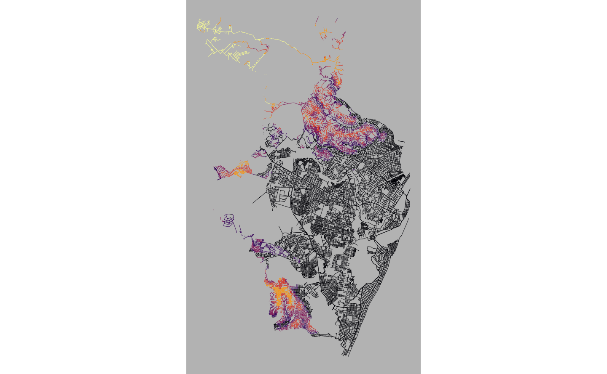
Mapa final
Para montar a versão finalizada do mapa, adiciona-se alguns elementos temáticos. Para saber mais sobre elementos temáticos e a função theme, consulte meu post.
cores = c(
"#0D0887FF", "#5402A3FF", "#8B0AA5FF", "#B93289FF", "#DB5C68FF",
"#F48849FF", "#FEBC2AFF"
)
jlabels = paste(jbreaks, jbreaks[-1], sep = "–")
jlabels[1] = paste("<", min(jbreaks[-1]))
jlabels[length(jlabels)] = paste(">", max(jbreaks))
ggplot(data = rec_streets_altitude) +
geom_sf(aes(color = level, fill = level), linewidth = 0.2) +
scale_color_manual(name = "Altitude", values = cores, labels = jlabels) +
scale_fill_manual(name = "Altitude", values = cores, labels = jlabels) +
guides(fill = guide_legend(nrow = 1), color = guide_legend(nrow = 1)) +
ggtitle("Recife") +
ggthemes::theme_map() +
coord_sf() +
theme(
plot.title = element_text(size = 16, hjust = 0.5),
legend.position = "top",
legend.direction = "horizontal",
legend.text = element_text(size = 10),
panel.background = element_rect(color = NA, fill = "#f6eee3"),
plot.background = element_rect(color = NA, fill = "#f6eee3"),
legend.background = element_rect(color = NA, fill = "#f6eee3")
)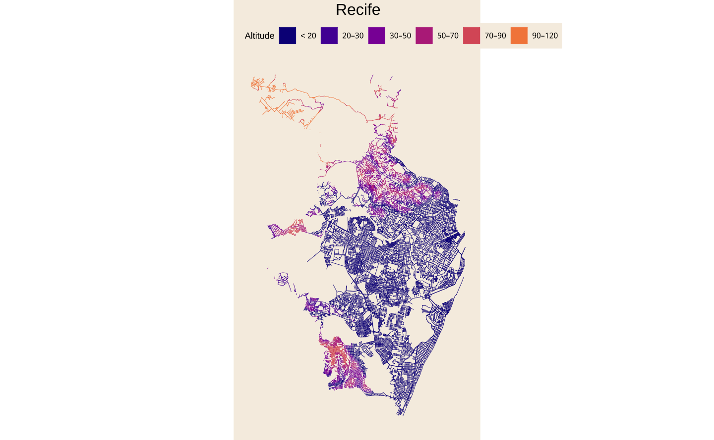
Programação funcional
A ideia geral da programação funcional é de transformar um código em funções. Todo o código acima é feito de comandos: encontre a tabela com a população dos municípios neste link e importe os dados; aplique o algoritmo de Jenks neste vetor numérico e guarde o resultado no objeto chamado jgroups e assim por diante.
Nosso objetivo agora é transformar o passo-a-passo acima em funções distintas, cada uma executando uma tarefa específica. Por fim, vamos criar uma função que chama todas estas funções individuais e que vai criar o mesmo mapa acima em uma única linha.
Antes de seguir no tutorial, vale revisar um pouco sobre como funcionam funções no R.
O básico de funções
Uma função transforma um input num output seguindo uma série de comandos. Uma função no R é composta de três elementos: (1) formals; (2) body; e (3) environment. O primeiro elemento corresponde aos argumentos da função e o segundo elemento corresponde à função, propriamente dita. Tomando um exemplo da matemática considere a função abaixo
\[ f(x) = x^2 + 1 \]
Neste caso, o formals seria simplesmente \(x\) e o body seria \(x^2 + 1\) . Podemos ver como isto ocorre dentro do R.
f <- function(x) {
x^2 + 1
}
formals(f)
#> $x
body(f)
#> {
#> x^2 + 1
#> }
environment(f)
#> <environment: R_GlobalEnv>O environment é o ambiente onde a função existe; geralmente, o environment é simplesmente R_GlobalEnv, o ambiente “global” onde habitam todos os objetos que você cria com x <- 1:5. Este aspecto é um pouco mais técnico, mas é o que permite que funções habitem dentro de funções.
O exemplo abaixo é adaptado do livro Advanced R e ilustra como funcionam diferentes environments quando se tem funções dentro de funções.
Funções compartimentalizam o seu ambiente de trabalho. O que acontece dentro da função, fica dentro da função. Assim, a linha y <- 2 “existe” apenas dentro do contexto da função j. Os objetos definidos dentro de funções não interferem com objetos criados fora da função.
print(environment())
#> <environment: R_GlobalEnv>
j <- function(x) {
y <- 2
print(environment())
#> <environment: 0x16eaa2320>
function() {
print(environment())
#> <environment: 0x16e9f8d40>
c(x, y)
}
}
k <- j(1)
k()
#> [1] 1 2
print(y)
#> Error in print(y) : object 'y' not foundUma função executa um conjunto de ações sobre seus inputs dentro de um ambiente controlado e devolve apenas o resultado final, output, para a sessão ativa do R. Assim, funções permitem isolar partes do código e dispensar resultados intermediários.
O próximo exemplo mostra como filtrar linhas de um data.frame. No fundo, esta função simplesmente chama dplyr::filter e fornece argumentos numa determinada maneira. Note que declaro o nome do pacote dplyr o que evita a necessidade de chamar library(dplyr) e torna a função filtrar_linhas portátil.
dados = data.frame(
grupo = c("A", "A", "A", "B", "C"),
y = c(1, 3, 7, 4, 1)
)
filtrar_linhas = function(df, filter_val) {
dplyr::filter(df, grupo == filter_val)
}
filtrar_linhas(dados, "B") grupo y
1 B 4Este é um ponto importante: em geral, nossas funções simplesmente chamam outras funções prontas numa ordem específica e com argumentos específicos.
O próximo é exemplo é um pouco mais sofisticado. Agora temos uma função que calcula a média geométrica de um vetor numérico. Neste caso há uma estrutura de if/else dentro do corpo da função que verifica o input antes de executar os cálculos. Especificamente, como a média geométrica é definida apenas para números positivos faz-se um teste para verificar se o input contém apenas números positivos.
Além disso, desta vez uso return para explicitamente declarar qual objeto a função deve retornar. Vale reforçar que o objeto z <- exp(mean(log(x))) passa a existir somente dentro da função. Ou seja, ele não interfere com algum objeto z que exista ou que possa vir a existir no ambiente global.
geometric_mean <- function(x) {
#> Verifica o input
if (is.numeric(x) && all(x > 0)) {
#> Calcula a média geométrica
z <- exp(mean(log(x)))
#> Retorna o vetor z
return(z)
} else {
#> Retorna um erro
stop("Non-positive values found in x.")
}
}
y <- c(1, 4, 5, 10, 15, 6)
geometric_mean(y)
#> [1] 5.119318
z <- c(-1, 4, 5, 10, 15, 6)
geometric_mean(z)
#> Error in geometric_mean(z) : Non-positive values found in x.Na sua essência, a programação funcional enfatiza modularidade e previsibilidade. Quebra-se uma tarefa complexa em partes menores. Cada uma destas partes menores vira uma função individual com input e output bem estabelecidos. Códigos escritos desta maneira também funcionam melhor com processamento paralelo, ou seja, há também um ganho de eficiência.
Vamos reconstruir todos os passos acima usando funções.
O mapa em funções
Shape da cidade
Por conveniência, eu repito abaixo o código que se usou para chegar no shape dos limites de Recife. Note o que acontece: (1) o primeiro passo filtra um data.frame para encontrar o código do IBGE do respectivo município; (2) usando o código, a função geobr::read_municipality() importa o shape.
Há dois objetos importantes nesta função: a tabela que contém as informações de ‘nome da cidade’ e ‘código do ibge’; e o string com o ‘nome da cidade’.
code_muni = top200 |>
filter(name_muni == "Recife") |>
pull(code_muni)
border = geobr::read_municipality(code_muni)Para transformar o código acima numa função, basta incluir estes objetos como argumentos.
get_border = function(city) {
#> Filtra a tabela top200 e encontra o código do município
code_muni = top200 |>
dplyr::filter(name_muni == city) |>
dplyr::pull(code_muni)
#> Importa o shape do município
border = geobr::read_municipality(code_muni, showProgress = FALSE)
return(border)
}A função get_border, definida acima, possui um único argumento city, o nome da cidade, e retorna um único objeto, border, um spatial data.frame que contém o shapefile com os limites territoriais do município.
Principais vias
O processo de transformar o código numa função consiste em entender quais são os elementos essenciais e acidentais. No código abaixo o nome da cidade "Recife, Pernambuco, Brazil" é um elemento mutável enquanto opq(bbox = getbb(…)) é a parte essencial. Similarmente, todos os comandos abaixo de streets são essenciais, mas o nome do objeto rec é inteiramente acidental.
#> Define os "limites" da busca. Monta um bounding box em torno do Recife
rec = opq(bbox = getbb("Recife, Pernambuco, Brazil"))
#> Pega as principais vias
streets = add_osm_feature(
rec,
key = "highway",
value = c("primary", "secondary", "tertiary", "residential")
)
#> Converte o objeto para sf (LINESTRING)
streets = osmdata_sf(streets)
streets = streets$osm_lines
streets = select(streets, osm_id, name)
streets = st_transform(streets, crs = 4674)
#> Encontra a intersecção entre as vias e os limites do município
streets_border = st_intersection(streets, border)Vamos dividir o código acima em duas etapas. Na primeira, vamos usar o nome da cidade para encontrar o nome do estado do município. Na segunda, vamos encontrar todas as ruas da cidade selecionada.
A função get_state é bastante simples: ela filtra a tabela que contém as informações das cidades e encontra o nome do estado do município selecionado.
get_state = function(city) {
top200 |>
dplyr::filter(name_muni == city) |>
dplyr::pull(name_state)
}
get_state("Recife")[1] "Pernambuco"A função get_streets usa o nome da cidade e o shape dos limites territoriais (gerado pela função get_border()) para encontrar todas as vias contidas dentro da cidade. Note como a função get_streets chama a função get_state.
get_streets = function(city, border) {
#> Encontra o nome da Unidade Federativa
nome_uf = get_state(city)
#> Monta o nome do local
name_place = stringr::str_glue("{city}, {nome_uf}, Brazil")
#> Monta a query
place = osmdata::opq(bbox = osmdata::getbb(name_place))
#> Importa todas as principais vias da cidade
streets = osmdata::add_osm_feature(
place,
key = "highway",
value = c("primary", "secondary", "tertiary", "residential")
)
#> Converte o dado
streets = streets %>%
osmdata::osmdata_sf() %>%
.$osm_lines %>%
dplyr::select(osm_id, name) %>%
sf::st_transform(crs = 4674)
#> Enconrtra a intersecção entre as estradas e o limites do município
streets_border = sf::st_intersection(streets, border)
#> Retorna o objeto streets_border
return(streets_border)
}Altitude
O código que encontra a altitude da cidade é muito similar ao código que encontra as principais vias. Neste caso, contudo, pode ser interessante manter controle sobre o argumento z da função get_elev_raster. Este argumento controla o nível de resolução da imagem de altitude que se importa.
Code
#> Importa os dados de altitude
altitude = elevatr::get_elev_raster(border, z = 9, clip = "bbox")
#> Converte para 'vector'
rec_alti = raster::rasterToPolygons(altitude)
rec_alti = sf::st_as_sf(rec_alti)
names(rec_alti)[1] = "elevation"
#> Converte o CRS e intersecta com os limites do município
rec_alti = rec_alti %>%
st_transform(crs = 4674) %>%
st_intersection(border) %>%
#> Remove geometrias inválidas
filter(st_is_valid(.))A função get_elevation utiliza o shape dos limites do município e retorna um spatial data.frame com o grid retangular que contém os dados de altitude do município. O argumento z controla o nível de resolução e varia de 1 a 14. Quanto maior, maior será a resolução (o “zoom” da imagem), ou seja, mais detalhado (e mais pesado) será o resultado.
get_elevation = function(border, z = 8) {
#> Importa os dados de altitude
altitude = elevatr::get_elev_raster(border, z = z, clip = "bbox")
#> Converte para 'vector'
altitude = raster::rasterToPolygons(altitude)
altitude = sf::st_as_sf(altitude)
names(altitude)[1] = "elevation"
#> Converte o CRS e intersecta com os limites do município
altitude = sf::st_transform(altitude, crs = 4674)
altitude = suppressWarnings(sf::st_intersection(altitude, border))
altitude = dplyr::filter(altitude, sf::st_is_valid(altitude))
return(altitude)
}Classificando
Para classificar os dados utiliza-se o algoritmo de Jenks. As duas funções abaixo retornam esse agrupamento tomando um spatial data.frame como argumento principal. Eu adicionei alguns argumento adicionais que facilitam a escolha do número dos grupos e (opcionalmente) permite os limites dos grupos sejam arredondados para gerar número mais bonitos.
add_jenks_breaks = function(shp, k = 7, round = FALSE) {
#> Classifica os dados de altitude em k grupos segundo o algo. de Jenks
jbreaks = BAMMtools::getJenksBreaks(shp$elevation, k = k)
#> Arredonda os números para chegar numa legenda menos quebrada
if (round) {
jbreaks[1] = floor(jbreaks[1])
jbreaks[length(jbreaks)] = ceiling(jbreaks)
jbreaks[2:(length(jbreaks) - 1)] = round(jbreaks)
}
#> Cria a coluna 'jenks_group' que classifica cada valor num grupo
shp = shp |>
dplyr::mutate(
jenks_group = findInterval(elevation, jbreaks, rightmost.closed = TRUE),
jenks_group = factor(jenks_group, labels = get_jenks_labels(jbreaks))
)
#> Verifica se todas as observações tem um grupo
check = any(is.na(shp$jenks_group))
if (check) {
warning("Some observations have failed to be grouped")
}
#> Transforma os groups em legendas
labels = get_jenks_labels(jbreaks)
#> Retorna o output numa lista
out = list(shp = shp, labels = labels)
return(out)
}
get_jenks_labels = function(x) {
labels = paste(x, x[-1], sep = "–")
labels[1] = paste("<", x[2])
labels <- labels[1:(length(labels) - 1)]
return(labels)
}Juntando as partes
O código que junta o grid de altitude com as ruas usava um for-loop em cada um dos grupos. Uma das desvantagens de usar loops é ter de criar objetos temporários; além disso, loops costumam ser mais lentos do que uma função que roda em paralelo, mas há exceções5.
Code
#> Cria uma lista para gravar os resultados
streets_altitude <- list()
#> For-loop em todos os elementos de jgroups
for (i in seq_along(jgroups)) {
#> Seleciona um nível do grupo em particular
group = levels(rec_alti$jenks_group)[[i]]
#> Encontra o subconjunto de do grid de altitude que corresponde a este grupo
poly = rec_alti %>%
filter(jenks_group == group) %>%
st_union(.) %>%
st_as_sf()
#> Faz a interseção deste subconjunto com as vias da cidade
joined = streets %>%
st_intersection(poly) %>%
filter(st_is_valid(.)) %>%
mutate(level = factor(i))
#> Grava o resultado como elemento da lista streets_altitude
streets_altitude[[i]] <- joined
}
rec_streets_altitude <- bind_rows(streets_altitude)A função get_street_altitude abaixo pega o grid de altitude da cidade e o shape das principais vias e retorna um spatial data.frame único que contém as ruas da cidade agrupadas pela sua altura.
Nesta função, define-se uma função “auxiliar” join_streets que existe somente dentro do contexto da função get_streets_altitude. Aplica-se esta função em paralelo usando furrr::future_map6.
get_streets_altitude = function(altitude, streets) {
stopifnot(any(colnames(altitude) %in% "jenks_group"))
#> Encontra todos os grupos
groups = levels(altitude$jenks_group)
#> Define uma função auxiliar
#> Esta função filtra o grid de altitude e faz a sua interseção
#> com o shape das princiapis vias
join_streets = function(group) {
poly = altitude %>%
dplyr::filter(jenks_group == group) %>%
sf::st_union(.) %>%
sf::st_as_sf() %>%
sf::st_make_valid()
joined = suppressWarnings(sf::st_intersection(streets, poly))
return(joined)
}
#> Aplica a função acima em todos os grupos em paralelo
street_levels = furrr::future_map(groups, join_streets)
#> "Empilha" o objeto num único spatial data.frame
out = dplyr::bind_rows(street_levels, .id = "level")
return(out)
}Mapa
Transformar o mapa final numa função é bastante simples já que quase todos os argumentos das funções vão continuar exatamente iguais. A única diferença importante a se notar é na escolha da paleta de cores. Como o número de grupos de altitude pode mudar, faz sentido que a paleta de cores também se altere. Além disso, adiciono também uma opção de usar a fonte Roboto Condensed com o pacote showtext.
map_plot = function(shp, labels, title, showtext = TRUE) {
cores = viridis::plasma(n = length(labels) + 1)
cores = cores[-length(cores)]
font = ifelse(showtext == TRUE, "Roboto Condensed", "sans")
plot =
ggplot(data = shp) +
geom_sf(aes(color = level, fill = level), linewidth = 0.2) +
scale_color_manual(
name = "Altitude",
labels = labels,
values = cores
) +
scale_fill_manual(
name = "Altitude",
labels = labels,
values = cores
) +
guides(fill = guide_legend(nrow = 1), color = guide_legend(nrow = 1)) +
ggtitle(title) +
ggthemes::theme_map() +
coord_sf() +
theme(
plot.title = element_text(
size = 30,
hjust = 0.5,
family = font
),
legend.title = element_text(
size = 20,
family = font,
color = "gray10"
),
legend.text = element_text(
size = 14,
family = font,
color = "gray10"
),
legend.position = "top",
legend.direction = "horizontal",
plot.background = element_rect(color = NA, fill = "#f6eee3"),
panel.background = element_rect(color = NA, fill = "#f6eee3"),
legend.background = element_rect(color = NA, fill = "#f6eee3")
)
return(plot)
}
sysfonts::font_add_google("Roboto Condensed", "Roboto Condensed")
showtext::showtext_auto()Uma função final
Agora que temos funções para cada uma das principais tarefas, podemos criar uma última função que vai executar estas funções na ordem apropriada.
A função map_altitude utiliza apenas o nome da cidade para gerar o mapa de altitude. Opcionalmente, pode-se alterar os argumentos k, que altera o número de grupos e z que aumenta/diminui a resolução do mapa de altura.
Como esta função executa vários passos intermediários, e alguns destes podem ser bastante demorados, eu incluo algumas mensagens que informam sobre o andamento da função. O resultado final é armazenado numa lista, que retorna alguns dos objetos intermediários como o shape de altitude.
map_altitude = function(city, k = 6, z = 7) {
#> Importa o shape do limite do município
message("Importando os limites do município: ", city)
city_border = get_border(city)
#> Importa as principais vias da cidade e junta com o limite do muni
message("Importando as vias.")
city_street = get_streets(city, city_border)
#> Importa a altitude da cidade
message("Importando a altitude.")
city_elevation = suppressMessages(get_elevation(city_border, z = z))
#> Classifica a altitude em grupos
message("Classificando e juntando os shapefiles.")
jenks = add_jenks_breaks(city_elevation, k = k)
city_elevation = jenks[["shp"]]
labels = jenks[["labels"]]
#> Junta a altitude (agrupada) com as vias
city_street_elevation = get_streets_altitude(city_elevation, city_street)
#> Monta o mapa final
message("Gerando o mapa final.")
plot = map_plot(city_street_elevation, labels = labels, title = city)
message("Feito.")
#> Retorna o output numa lista
out = list(
shp = city_street_elevation,
streets = city_street,
elevation = city_elevation,
plot = plot
)
return(out)
}Testando a função
Feito tudo isto. Agora podemos testar a função com outras cidades.
São Caetano do Sul
São Caetano do Sul é uma boa cidade teste, porque ela é bem pequena então os resultados não demoram tanto para carregar.
scs = map_altitude("São Caetano Do Sul", k = 4, z = 8)
scs$plot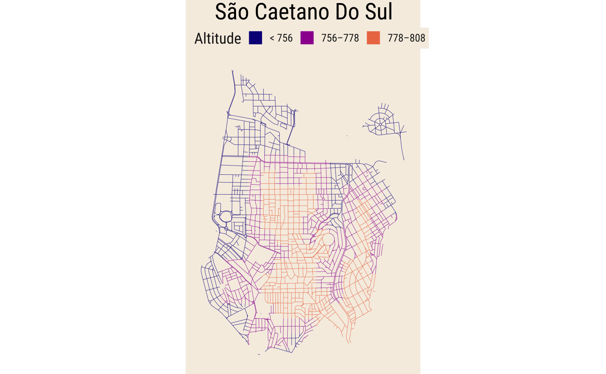
Os demais mapas gerados foram feitos em resolução bastante elevada, então os códigos podem demorar várias horas para executar. Recomendo começar testando com valores menores de z. Mesmo em alta resolução, há melhorias possíveis nos gráficos como mudanças no “enquadramento” do mapa e também na escolha das quebras da legenda.
Fortaleza
fortaleza = map_altitude("Fortaleza", z = 13)
fortaleza$plot
Osasco
osa <- map_altitude("Osasco", k = 7, z = 12)
osa$plot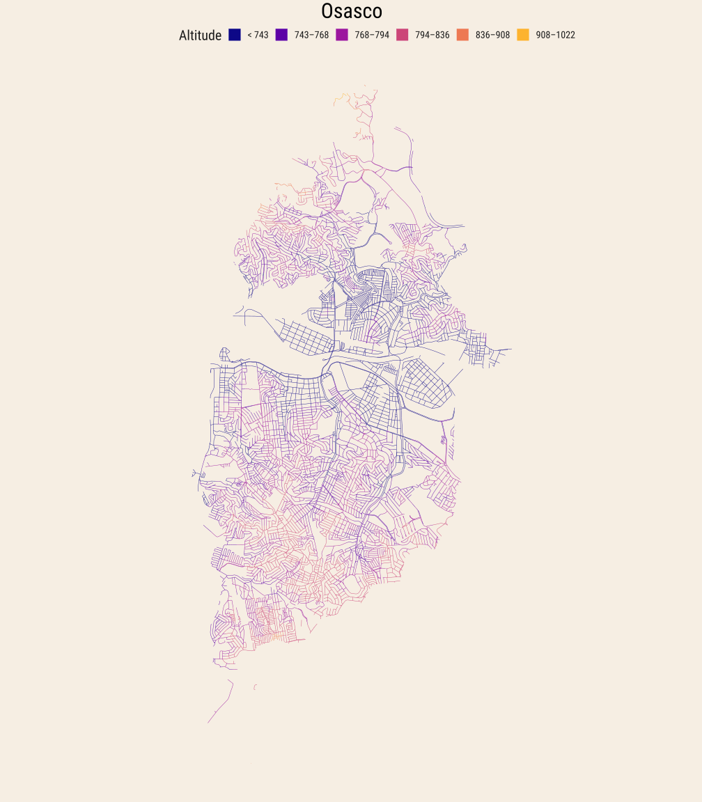
Belo Horizonte
map_altitude("Belo Horizonte", k = 7, z = 13)$plot
Porto Alegre
map_altitude("Porto Alegre", k = 6, z = 13)
Curitiba
map_altitude("Curitiba", k = 8, z = 11)
Footnotes
Chamar muitos pacotes numa mesma sessão pode levar a muitos conflitos entre funções com o mesmo nome. Isto não é um problema muito sério já que sempre é possível especificar
nome_pacote::nome_funcao.↩︎Na verdade, o código encontra todos os elementos com a classe
tablena página.↩︎Para uma introdução aos tipos de objetos espaciais (raster e vector) veja Lovelace (2023).↩︎
Existem alguns métodos que ajudam a escolher um número “ótimo” de clusters, como o “elbow method” mas vale lembrar que clustering é muito mais arte do que ciência. Clustering envolve agrupar dados semelhantes em um número finito de grupos, mas há inúmeras maneiras de definir “semelhante”; além disso, o algoritmo de clustering sempre chega num agrupamento, qualquer que seja a escolha do número de grupos. Assim, é importante frisar que estes resultados são mais explortatórios, por assim dizer.↩︎
Em geral, desde que o loop seja bem feito ele não será muito lento. Para consultar boas práticas de como fazer bons loops consulte Best Coding Practices for R. Uma comparação recente da velocidade de loops no R está disponível em On the performance of for loops in R.↩︎
Alternativamente, pode-se usar
parallel::mclapply, mas esta função, infelizmente só funciona em sistemas MacOs e Linux.↩︎